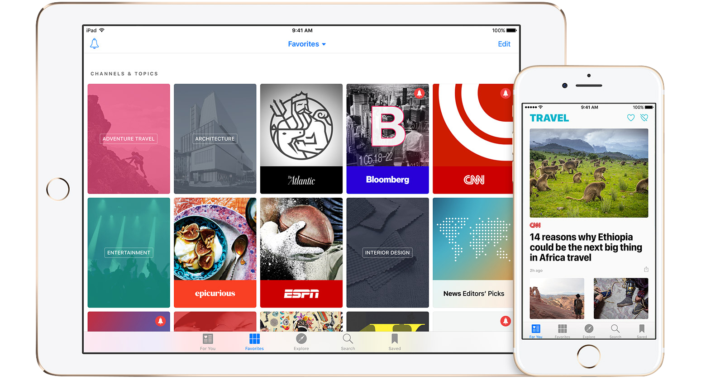

The pioneers in online magazine publishing were Salon magazine. In 1995, Salon launched the first major online-only magazine at Salon.com Like many print magazines, the site divides content into sections including entertainment, books, comics, life, news and politics, and technology and business. With an average of 5.8 million monthly unique visitors, this online magazine demonstrates the potential successes of Internet-based publications.
Many other leading magazines have taken a similar step towards adapting to the digitisation of the modern world, by producing online editions of their magazines. The website, Pocketmags.com capitalises on this by providing individuals with a host site, where they can store and access thier digital magazine downloads and subscriptions.
With 1000s of magazine titles, great discounts and the ability to read your purchases on Apple, Android, Kindle, Windows devices as well as your PC and Mac, Pocketmags.com offers its customers the ideal way to find the perfect magazine subscription. You can shop by category, best-sellers, great special offers or just search for your favourite magazine via our discover tools.9r
 Various apple appliacations the provide the capacity for instantaneous, online viewing.
 Android products offering similar functions, allowing information to be viewed on various digital platforms.
Android products offering similar functions, allowing information to be viewed on various digital platforms.
Such advancements bring us to this quintesential question: Is the death of paper apparent? Will online magazines and newspapers abolish the once prominant hardcopy of the printed page?